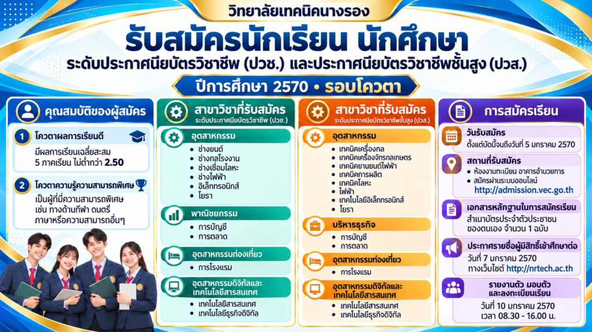
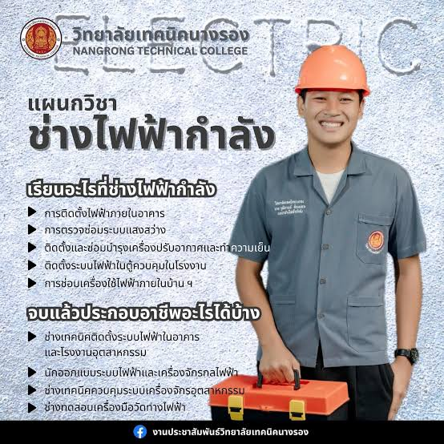

สร้างสรรค์ความรู้ ฝึกฝนทักษะฝีมือ ปลูกฝังคุณธรรม ผลิตบุคลากรอาชีวศึกษาคุณภาพสู่สังคมยุคดิจิทัล

คลิกเพื่อดูรายละเอียดและรับชมข่าวสารประชาสัมพันธ์เฉพาะแผนกวิชาผ่านช่องทาง Facebook
Department of Information Technology
มุ่งเน้นการเรียนรู้ด้านการเขียนโปรแกรม พัฒนาเว็บ พัฒนาแอปพลิเคชัน เครือข่ายคอมพิวเตอร์ และซอฟต์แวร์ประยุกต์

ช่างอุตสาหกรรมElectrical Power Department
ฝึกทักษะการติดตั้งระบบไฟฟ้า งานเดินสายไฟฟ้า ระบบควบคุมมอเตอร์ และพลังงานทดแทนอย่างมืออาชีพ
Automotive Department
เรียนรู้เครื่องยนต์แก๊สโซลีน ดีเซล ระบบส่งกำลัง ซ่อมบำรุงยานยนต์สมัยใหม่และยานยนต์ไฟฟ้า
Mechanical Department
เชี่ยวชาญงานกลึง งานเชื่อม เครื่องจักรกล CNC การออกแบบชิ้นส่วนและเครื่องมือในอุตสาหกรรม
Electronics Department
การออกแบบวงจรไมโครคอนโทรลเลอร์ ระบบไอโอที (IoT) ซ่อมบำรุงอุปกรณ์และวงจรอิเล็กทรอนิกส์
Accounting Department
ฝึกฝนระบบบัญชีการเงิน การภาษีอากร ใช้โปรแกรมบัญชีสำเร็จรูปและการบริหารจัดการการเงินยุคใหม่
เปิดรับสมัครนักเรียน นักศึกษาใหม่ ประจำปีการศึกษา 2567 ทั้งระดับ ปวช. และ ปวส. ติดตามรายละเอียดและสาขาที่เปิดรับสมัครได้ที่นี่
อ่านต่อบน Facebookขอแสดงความยินดีกับคณะครูและนักศึกษาที่ได้รับรางวัลการประกวดนวัตกรรมสิ่งประดิษฐ์ของคนรุ่นใหม่ ประจำปีการศึกษา
อ่านต่อบน Facebookรับข้อมูลข่าวสาร กิจกรรมวิทยาลัย และการประกาศสำคัญผ่านเพจ Facebook ประชาสัมพันธ์หลักได้ตลอด 24 ชม.